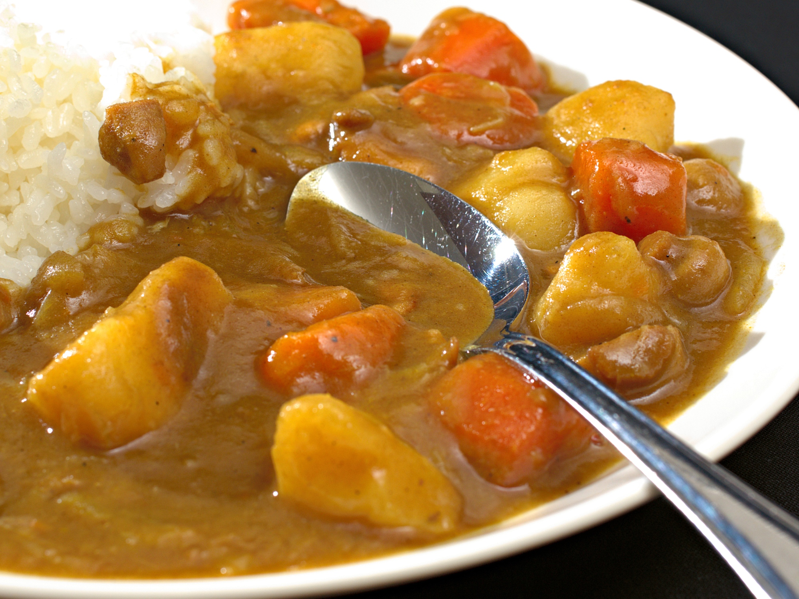

Curry
Home

“
Curry Rice” by
Janne Moren,
CC BY-NC-SA 2.0
Description
Japanese-style curry is my go-to recipe to make when I want a nice home-cooked meal for low effort. It has a lot of flavor, is very filling, and makes 8-10 servings. Leftovers are great with rice or ramen noodles.
Ingredients
- 1lb meat (chicken, stew beef, etc.)
- 2 large onions
- 2 cloves garlic
- 1 tsp ginger
- 2 carrots
- 3 medium red or yellow potatoes
- salt & pepper to taste
- oil
- Java Curry curry block
- 8 cups chicken stock
- short grain white rice
Add-ins
- 1 tbsp ketchup
- 1 tbsp soy sauce
- 1 tbsp Worcester sauce
- 1 tbsp dark cocoa powder
- 1 tsp S&B curry powder
- lemon juice
Steps
- Chop onions, garlic, carrots, and potatoes, and grate ginger. Put them to the side.
- Heat 1 tbsp oil in a pot on medium heat.
- Chop the meat and cover in salt and pepper.
- Add meat and saute until at least the outside is fully cooked. It will be slow-cooked so try not to overdo it.
- Add onions and cook for a few minutes.
- Add garlic, ginger, carrots, and potatoes.
- Add stock to the pot and turn the heat to high. Once it boils, skim the fat with a mesh skimmer (optional if lazy), and reduce heat to low. Let it cook for 45 minutes.
- Start desired amount of rice in the rice cooker. ~1/2 rice cooker cup per person, in my experience.
- Once it's been 45 minutes, turn up the heat to medium/medium-high and add curry block broken into chunks, as well as any desired add-ins. Save the lemon juice for later, though. Simmer for 10 minutes and stir regularly.
- Squeeze in lemon juice at the end, and stir together one last time. Serve with rice.